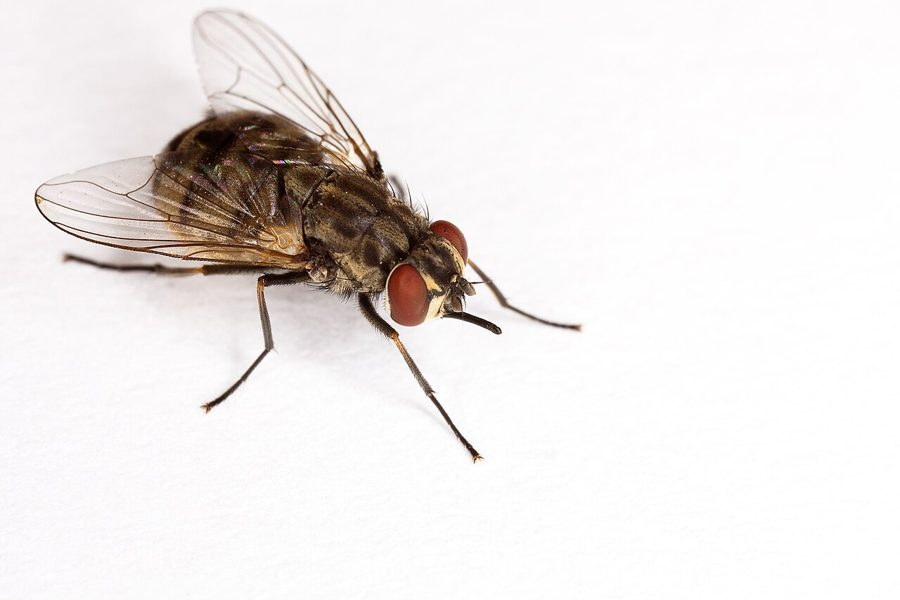

डंक मक्खीStable Fly
Stomoxys calcitrans · Muscidae · INS-0169

- Scientific name वैज्ञानिक नाम
- Stomoxys calcitrans (Linnaeus, 1758)
- Family कुल
- Muscidae
- Hindi हिंदी
- डंक मक्खी
- Local names स्थानीय नाम
- dank makkhi, stable fly, biting fly
- Status here यहाँ की स्थिति
- native
- Movement आवागमन
- Resident, here all year
- Known from कहाँ दर्ज
- Others have published records from the wider Awadh–Purvanchal plain, none yet from Basti–Ayodhya अवध–पूर्वांचल से दूसरों के प्रकाशित अभिलेख, बस्ती–अयोध्या से अभी नहीं
- IUCN IUCN
- not evaluated
- Review समीक्षा
- audited and independently read
When to look कब देखें
Present all year. साल भर मौजूद।
Tell it apart from इनसे अलग पहचानें
डंक मक्खी / Stable Fly
Stomoxys calcitrans (Linnaeus, 1758) — Muscidae
डंक मक्खी — गायों और भैंसों के चारागाह में तेज़ दर्द के साथ काटने वाली मक्खी। छोटी, भूरी, तेज़ गंध वाली। घर में भी घुस जाती है और गर्मी में बहुत परेशानी करती है। पशुओं को बीमार भी करती है।
Quick Identification त्वरित पहचान
| Feature | Description |
|---|---|
| Adult length | 4–6 mm |
| Body colour | Grey to brownish |
| Thorax | Four pale longitudinal stripes |
| Abdomen | Grey with dark spots |
| Proboscis | Long, prominent, straight (piercing-sucking type) |
| Wings | Clear; overlap slightly when at rest |
| Larva | Creamy white, tapering; 5–8 mm |
| Larval habitat | Manure, straw, decaying hay, feed waste |
Field tip: Look for small flies with prominent straight proboscis piercing the skin of cattle and humans. Bite is distinctly painful. Attracted to animal shelters and manure piles. Most active during warm days; less active at night.
हिंदी — कैसे पहचानें: छोटी मक्खी, तेज़ दर्द के साथ काटती है। पशुओं के गले, पैर, और पूँछ पर दिखती है।
Morphology आकारिकी
Biometrics:
| Measurement | Range |
|---|---|
| Adult length | 4–6 mm |
| Proboscis length | 1.5–2 mm |
| Larva length | 5–8 mm |
| Pupa length | 4–6 mm |
Adult: Small, robust fly; grey to brownish with four pale longitudinal stripes on thorax. Abdomen grey with dark spots. Proboscis long, straight, prominent, and sturdy (adapted for piercing skin); this distinguishes it from the non-biting house fly. Eyes large. Wings clear, held slightly overlapping at rest.
Larva: Creamy white to tan; cylindrical, tapering toward posterior end. Head small; posterior end with two dark spiracles. Develops in manure and decaying organic matter.
Pupa: Brown; barrel-shaped; formed in substrate.
हिंदी: छोटी, भूरी-राख़ी मक्खी, लंबी सीधी सूँड। लार्वा सफ़ेद, सड़ते खाद में।
Behaviour & Ecology व्यवहार और पारिस्थितिकी
The Stable Fly is a cosmopolitan biting fly found on six continents. Both males and females are blood-feeders, particularly on livestock (cattle, horses, water buffalo), though they readily bite humans. The fly is attracted to animal shelters, stockyards, and manure piles, where larvae develop in decomposing organic matter. The fly has high reproductive potential; under favourable conditions (warm temperature, abundant manure), multiple generations can complete in 2–3 weeks. Population dynamics are closely linked to livestock production and manure management.
The species is a mechanical vector of various livestock diseases (anthrax, anaplasmosis) and can transmit blood parasites. Its primary significance, however, is as a nuisance pest causing painful bites and stress to livestock, leading to reduced productivity (milk yield, weight gain) and economic loss.
हिंदी: पशुओं को पीड़ा देती है, दूध भी कम करती है। खाद के ढेर में लार्वे पलते हैं।
Life Cycle / Phenology जीवन चक्र
| Stage | Duration | Notes |
|---|---|---|
| Egg | 2–3 days | Laid in manure or decaying material |
| Larva | 7–14 days | Three instars; rapid in warm weather |
| Pupa | 4–8 days | In substrate |
| Adult | 20–30 days | Blood-feeder; oviparous |
| Cycle | 15–25 days | Multiple generations in warm months |
हिंदी: अंडा 2–3 दिन, लार्वा एक–दो हफ़्ते, प्यूपा एक हफ़्ता। 3–4 हफ़्ते में नई मक्खी।
Host Plants or Prey आहार
For larvae (detritivores):
- Decomposing manure (cattle, horse, human)
- Decaying straw and hay
- Soiled bedding material
- Any decomposing organic matter in animal shelters
For adults (blood-feeders):
- Cattle (preferred)
- Horses, water buffalo, goats
- Humans
- Occasionally birds and other animals
Predators / Natural Enemies शत्रु
- Parasitoid wasps: Spalangia and Muscidifurax species (important natural control agents)
- Flies: tachinid parasitic flies
- Predatory insects: water striders, ground beetles in manure
- Entomopathogenic fungi: Beauveria and Metarhizium in high-humidity conditions
- Predatory birds: occasionally consume adults
Agricultural / Human Relevance कृषि प्रासंगिकता
The Stable Fly is one of the most economically important insect pests of livestock in tropical and subtropical regions. The painful bite stress to cattle, horses, and buffalo leads to reduced grazing, restlessness, decreased milk production, and weight loss. Economic losses of tens of millions of dollars are estimated annually in livestock-producing regions globally.
Management: Manure management (regular removal, composting, or turning to kill larvae); rotational grazing away from manure accumulation; biological control with parasitoid wasps (Spalangia, Muscidifurax); insecticide treatment of manure (limited due to resistance); and newer approaches like sterile male release programs in some regions.
Expected Locally स्थानीय रूप से अपेक्षित
Not a field record. Written from published accounts for eastern Uttar Pradesh. No confirmed local sighting yet — if you have seen it, that is what the atlas needs.
अभी तक स्थानीय पुष्टि नहीं। यह विवरण प्रकाशित स्रोतों से है, किसी अवलोकन से नहीं।
Expected wherever livestock (cattle, buffalo, horses) are kept in Basti and Ayodhya districts. Present year-round but most abundant during warm months (April–October). Particularly abundant in poorly managed animal shelters and stockyards with accumulating manure. A photograph of the fly or damage pattern on livestock with date would confirm local presence.
Distribution वितरण
Global range: Cosmopolitan; found on six continents; particularly abundant in tropical and subtropical regions with livestock production.
In India: Throughout India wherever livestock are kept.
In Uttar Pradesh: Common in livestock-rearing districts.
In Basti district / eastern UP: Expected around cattle and buffalo shelters; common during warm months.
Research Questions शोध प्रश्न
Anyone can investigate these | कोई भी इन प्रश्नों की जाँच कर सकता है
- How does manure management (daily removal, weekly, or accumulation) affect stable fly populations? — Compare shelters with different manure management practices.
- What is the larval development time at different temperatures? — Rear larvae at various temperatures; record duration to pupation.
- Do parasitoid wasps naturally parasitise pupae in cattle shelters? — Collect pupae; rear indoors; record parasitoid emergence.
- How much blood does a female fly consume per feeding? — Allow feeding on hosts; measure weight change.
- Does providing shade and wind break reduce biting fly activity? — Compare bite rates in sheltered versus exposed areas.
Similar Species मिलती-जुलती प्रजातियाँ
| Species | How to tell apart | हिंदी |
|---|---|---|
| Musca domestica (House Fly) | Non-biting; proboscis is sponging type (folded); four stripes less distinct | घर की मक्खी, काटती नहीं |
| Haematobia irritans (Horn Fly) | Smaller; darker; primarily on head/horns of cattle; different habitat preference | अलग आकार, अलग स्थान |
| Other Stomoxys species | Rare in South Asia; morphological differences subtle; needs expert examination | दुर्लभ प्रजाति |
Field rule: Small grey-brown fly with four pale thoracic stripes and long straight proboscis, biting painfully on livestock or humans; larvae in cattle manure: Stable Fly (Stomoxys calcitrans).
Taxonomy & Classification वर्गीकरण
Original description. Described by Linnaeus in 1758 in Systema Naturae, 10th edition, as Musca calcitrans based on European specimens. Transferred to Stomoxys (erected by Geoffroy, 1762) by later authors.
Subspecies. Monotypic — no subspecies are formally recognised, though geographic populations show variation.
Family and order placement. Order Diptera (true flies), family Muscidae (flies related to the house fly).
Phylogenetic notes. Stomoxys calcitrans is the only cosmopolitan member of the genus and shows remarkable success across diverse climates, likely due to early human-livestock associations that increased its range.
IUCN status rationale. Not evaluated. As a widespread, abundant, and economically important pest species, no conservation assessment is warranted.
Photo Gallery फोटो गैलरी
Photos needed आवश्यक फोटो
- [ ] Adult fly on cattle or human skin (पशु पर मक्खी)
- [ ] Larvae in decomposing manure (सड़ते खाद में लार्वे)
- [ ] Damage/bite marks on livestock (पशु पर काटे के निशान)
No photos yet — add field photos to media/species/stable_fly/ and run node scripts/sync_photos.js.
References संदर्भ
- Linnaeus, C. (1758). Systema Naturae, editio decima, vol. 1. Stockholm. [original description, as Musca calcitrans]
- Geoffroy, E.L. (1762). Histoire abrégée des insectes qui se trouvent aux environs de Paris, vol. 2. [genus Stomoxys]
- Taylor, D.B., Moon, R.D. & Mark, D.R. (2012). Economic impact of stable flies (Diptera: Muscidae) on cattle production. Journal of Medical Entomology 49: 198–209.
- Campbell, J.B. (1976). Livestock Insects. Springer-Verlag, New York. [livestock pest ecology]
- Krafsur, E.S. (1985). Ecological factors affecting stable fly (Diptera: Muscidae) populations. Annual Review of Entomology 30: 117–141.
- GBIF Occurrence Data — Stomoxys calcitrans, India (2023).
Source file: species/fauna/insects/stable_fly.md